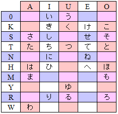

This week we are studying 8 more syllables, especially completing the T series. None of the kana really fit into a pattern, but there certainly are elements that match. For example, katakana for MO and TE are based on NI. HI, MO, and SE all have the same J shape. It takes a lot of practice to see them as different which is why Japanese students spend so much time copying them, reading them, and writing them. There is no substitute for practicing them.
 The other think to keep track of is how much progress you have made. There are 96 kana and so far you have been introduced to 58. That means you are more than half way done. That's progress. You should feel good about how much you have done at the same time that you are pushing hard to learn all of them. Don't forget to go back and practice all of the kana, not just the newest ones. Practice, practice, ...*sigh*... practice. Good Luck! 🌝
Now for something not so pleasant. For thousands of years people have killed each other and no people on earth is free from that stain. Some of us are better at it than others. Some cultures have made particularly devious, painful, and evil ways to kill one another. Sometimes the killing is done by the government as condemnation for a crime. Stoning, crucifixion, electricution, are all examples of how man has killed for the state. Then there are mass killings which vary from war-time genocide by the Turks against the Armenians, by Hitler against the Jews, or even by the US against the Native Americans. We are all stained with this kind of crime and it has been going on a long time.
At the end of World War II, however, there was one incident that will leave a long scar on the Japanese psyche and it is worth learning about. This is especially true for Americans who will be branded with this crime forever. In the summer of 1945, and in an effort to end the war dropped two bombs in just four days. Those were all the bombs we had, but the Japanese were convinced that we would keep doing it until they surrendered and the war was ended within a few days. As one video below put it the nuclear weapons "are deeply immoral" and yet, was their use in order to end a war and more killing wrong? I cannot see it as immoral, even if I regret the need for such weapons. Even today the Japanese do not hold Americans responsible, but they have taken a strong stance against these weapons or any future warfare.

Today there are peace parks in Hiroshima and Nagasaki. There are annual memorials to the people who died there. One very funny man who went to Japan and witnessed these memorials had a decidedly unfunny reaction. He said that he was deeply angered by the way it was remembered by the Japanese. They were almost fatalistic as if this had been a natural disaster and not the act of one man against another. He thought they should feel anger at each other or at America...something. "For me," he says, "the most moving moment was the ritual offering of water by representatives of the victims' families. After the bomb blast, many of the dying cried out constantly for water--mizu-- but there was none; now, finally, they receive it." Now almost 80 years later there are still scars on the cities--literal scars left as some of their people were burned away in an instant and the walls behind them were protected for just a moment from the scorching rays of a burning sun.
Let us leave the moral question and deal with the practical. Among the Japanese, the people who were affected by the bomb, and especially by the residual radiation, are known as hibakusha. In the immediate aftermath of the bombs most hibakusha died from burns, wounds, and extreme radiation sickness than died in the first seconds after the bomb. Over the years, those who had been exposed, but did not die instantly would have all kinds of cancers and slow, painful deaths. For this reason, the Japanese government continues to have the hibakusha treated by specialized doctors that watch over them for signs of cancer and related illnesses. Many have died, but there are still some 140,000 left today.
Although the Japanese government is kind to the hibakusha, the population of Japan has a love-hate relationship with them. Originally, there was fear that anyone affected by the bomb had unseen potential for abnormalities. Japanese culture associates a healthy body with purity and the kinds of scars and birth defects seen in the first wave of survivors scared people. Some women in the bombings were pregnant at the time and many of those babies died or were malformed. Since then, those same women went on to have healthy children, but the Japanese remembered those who died and the wounds they saw. It is difficult to convince any Japanese that the hibakusha, or their children or grandchildren are not contaminated in some way. Few people want to marry a hibakusha, or their descendants. Few people want to hire the hibakusha.
One of the most famous hibakusha was a young girl called Sadako Sasaki. She was very young when the bomb hit Hiroshima. She was 10 before the cancer started. During her two year battle with cancer she became famous as the little girl with the 1000 cranes or senbazuru. Japanese legend says that if a person can make 1000 cranes in a single year--made by himself not given by another--that person can make a special wish. Poor little Sadako wished to be well again. She got her 1000 cranes, but she still died at the age of 12. Her story is still the best known among all the hibakusha because her struggle to complete the senbazuru was so well known.